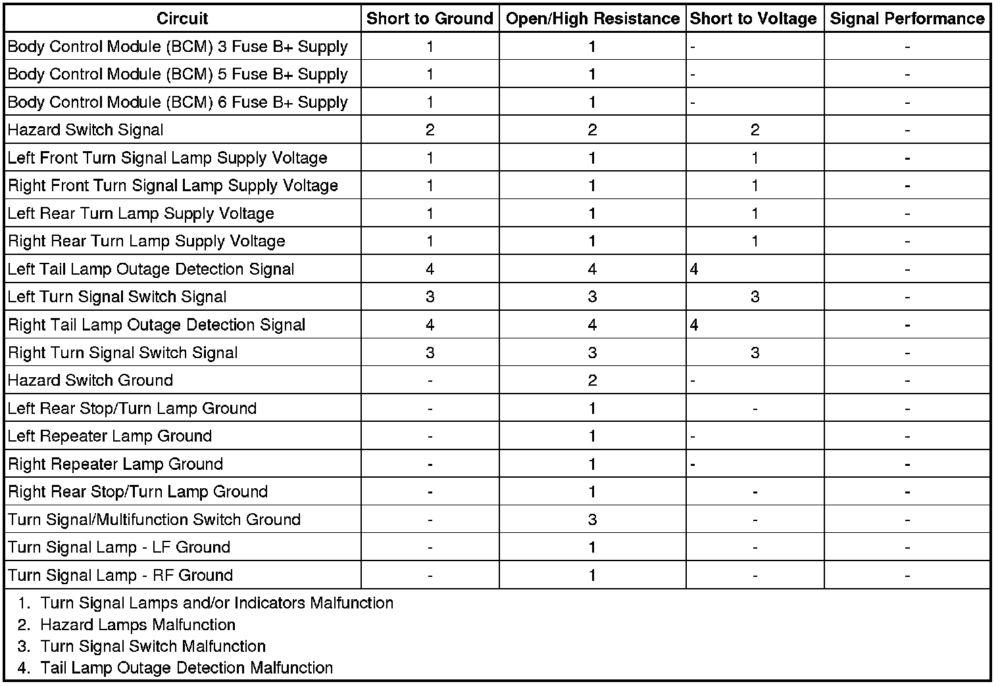

Turn Signal Lamps and/or Indicators Malfunction
Turn Signal Lamps and/or Indicators Malfunction
Diagnostic Instructions
* Perform the Diagnostic System Check - Vehicle (Initial Inspection and Diagnostic Overview) prior to using this diagnostic procedure.
* Review Strategy Based Diagnosis (Initial Inspection and Diagnostic Overview) for an overview of the diagnostic approach.
* Diagnostic Procedure Instructions (Initial Inspection and Diagnostic Overview) provides an overview of each diagnostic category.
Diagnostic Fault Information

Circuit/System Description
Ground is applied at all times at G200 to the turn signal/multifunction switch. The turn signal lamps may only be activated with the ignition switch in the ON or START position. When the turn signal/multifunction switch is placed in either the TURN RIGHT or TURN LEFT position, ground is applied to the body control module (BCM) through either the right turn or left turn signal switch signal circuit. The BCM then applies a pulsating voltage to the front and rear turn signal lamps through there respective voltage supply circuits. Ground for the left and right front turn signal lamp is supplied at G104. Ground for the rear turn signal lamps is supplied at G402 for the left and G401 for the right.
Reference Information
Schematic Reference
Exterior Lights Schematics (Exterior Lights Schematics)
Connector End View Reference
Component Connector End Views (Connector Views)
Description and Operation
Exterior Lighting Systems Description and Operation (Exterior Lighting Systems Description and Operation)
Electrical Information Reference
* Circuit Testing (Component Tests and General Diagnostics)
* Connector Repairs (Component Tests and General Diagnostics)
* Testing for Intermittent Conditions and Poor Connections (Component Tests and General Diagnostics)
* Wiring Repairs (Component Tests and General Diagnostics)
Scan Tool Reference
Control Module References (Programming and Relearning)
Diagnostic Aids
The tail lamp outage detection circuits are low current B+ circuits supplied by the BCM. For purposes of testing, a test lamp connected between the outage detection circuit and ground will not illuminate due to the low current.
Circuit/System Verification
1. Ignition ON, observe the scan tool right and left turn signal switch parameters while cycling the turn signal switch between the left and right positions. The readings should toggle between ACTIVE and INACTIVE.
• If the readings do not change between the commanded states, refer to Turn Signal Switch Malfunction.
• If the readings change between the commanded states and the turn signal indicators are inoperative, refer to Turn Signal Indicators Malfunction.
2. Ignition ON, observe the left turn signal lamps and turn signal indicators on the IPC while activating the left turn signals. The left turn signal lamps and indicators should illuminate and flash when turned ON.
• If the left turn signal lamps and indictors illuminate but flash in a rapid manner, refer to Tail Lamp Outage Detection Malfunction.
3. Ignition ON, observe the right turn signal lamps and turn signal indicators on the IPC while activating the right turn signals. The right turn signal lamps and indicators should illuminate and flash when turned ON.
• If the left turn signal lamps and indictors illuminate but flash in a rapid manner, refer to Tail Lamp Outage Detection Malfunction.
Circuit/System Testing
Turn Signal Switch Malfunction
1. Ignition OFF, disconnect the X3 harness connector at the turn signal/multifunction switch.
2. Ignition OFF, verify that a test lamp illuminates between B+ and the ground circuit terminal C.
• If the test lamp does not illuminate, test the ground circuit for an open/high resistance.
3. Ignition ON, verify the scan tool left turn signal switch parameter is INACTIVE.
• If not the specified value, test the signal circuit terminal D for a short to ground. If the circuit tests normal, replace the BCM.
4. Verify the scan tool right turn signal switch parameter is INACTIVE.
• If not the specified value, test the signal circuit terminal A for a short to ground. If the circuit tests normal, replace the BCM.
5. Install a 3A fused jumper wire between the signal circuit terminal D and ground. Verify the scan tool left turn signal switch parameter is ACTIVE.
• If not the specified value, test the signal circuit for a short to voltage or an open/high resistance. If the circuit tests normal, replace the BCM.
6. Install a 3A fused jumper wire between the signal circuit terminal A and ground. Verify the scan tool right turn signal switch parameter is ACTIVE.
• If not the specified value, test the signal circuit for a short to voltage or an open/high resistance. If the circuit tests normal, replace the BCM.
7. If all circuits test normal, test or replace the turn signal/multifunction switch.
Turn Signal Lamps Malfunction
1. Ignition OFF, disconnect the X4 harness connector at the BCM.
2. Ignition ON, verify that a test lamp illuminates between the BCM 3 fuse voltage supply circuit terminal 2 and ground.
• If the test lamp does not illuminate, test the voltage supply circuit for a short to ground or an open/high resistance.
3. Ignition ON, verify that a test lamp illuminates between the BCM 5 fuse voltage supply circuit terminal 1 and ground.
• If the test lamp does not illuminate, test the voltage supply circuit for a short to ground or an open/high resistance.
4. Ignition ON, verify that a test lamp illuminates between the BCM 6 fuse voltage supply circuit terminal 3 and ground.
• If the test lamp does not illuminate, test the voltage supply circuit for a short to ground or an open/high resistance.
5. Ignition OFF, reconnect the X4 harness connector at the BCM.
6. Ignition OFF, disconnect the harness connector at the inoperative turn signal lamp.
7. Ignition OFF, exterior lamps OFF, test for less than 5.0 ohms of resistance between the ground circuit and ground.
• If greater than the specified range, test the ground circuit for an open/high resistance.
8. Connect a test lamp between the control circuit and the ground circuit.
9. Command the appropriate turn signal lamp ON and OFF with a scan tool. The test lamp should turn ON and OFF when changing between the commanded states.
• If the test lamp is always ON, test the control circuit for a short to voltage. If the circuit tests normal, replace the BCM.
• If the test lamp is always OFF, test the control circuit for a short to ground or an open/high resistance. If the circuit tests normal, replace the BCM.
10. If all circuits test normal, test or replace the appropriate turn signal lamp assembly.
Tail Lamp Outage Detection Malfunction
1. Ignition OFF, disconnect the harness connector at the appropriate rear tail lamp assembly.
2. Ignition ON, test for B+ between the outage detection circuit terminal C and ground.
• If the measured voltage is less than B+, test the signal circuit for a short to ground or an open/high resistance. If the circuit tests normal, replace the BCM.
3. Ignition ON, connect a test lamp between the outage detection circuit terminal C and ground. The test lamp should not Illuminate.
• If the test lamp illuminates, test the signal circuit for a short to voltage. If the circuit tests normal, replace the BCM.
4. If all circuits test normal, test or replace the tail lamp assembly.
Turn Signal Indicators Malfunction
1. Ignition ON, with a scan tool perform the display test for the instrument panel cluster (IPC) and observe the turn signal lamp indicators.
• If the turn signal lamp indicators illuminate during the test, replace the BCM.
• If the turn signal lamp indicators do not illuminate during the test or remain illuminated at all times, replace the IPC.
Component Testing
Tail Lamp Assembly
1. Ignition OFF, disconnect the harness connector at the appropriate rear tail lamp assembly.
2. Test for infinite resistance between the outage detection terminal C and the ground terminal D at the tail lamp assembly.
• If not the specified value, replace the tail lamp assembly.
Repair Instructions
Perform the Diagnostic Repair Verification (Verification Tests) after completing the diagnostic procedure.
* Repeater Lamp Replacement (Service and Repair)
* Tail Lamp Replacement (Service and Repair)
* Turn Signal Multifunction Switch Replacement (Turn Signal Multifunction Switch Replacement)
* Daytime Running Lamp Replacement (Daytime Running Lamp Replacement)
* Control Module References (Programming and Relearning) for BCM or IPC replacement, setup, and programming